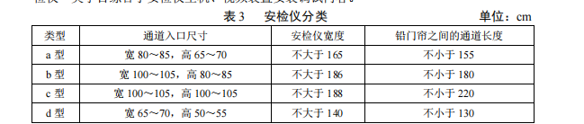

本章包括管槽铺设、管槽吊装、桥架壁装、开槽与打洞 4 节。
1．桥架类子目接地按接地跨接线方式编制。
2．取消隔板类桥架子目，按 100mm、200mm 高度设置单独的隔板子目，隔板子目按
照两层隔板编制。
3．打洞类子目定额单位为“处”，多面墙平行穿越时，每面墙为一处。
本章包括光缆布放、电缆布放 2 节。
光缆成端单独计列，宜采用《铁路工程预算定额 第五册 通信工程》相关定额子目。
本章包括信息插座安装、跳线及配线布放 2 节。
1．“信息插座安装”子目综合了信息点测试消耗量。
2．“尾纤”、“跳纤”、“跳线”子目分不同线缆类型和长度以“根”为单位。
本章包括服务器设备安装与调试、存储设备安装与调试、网络设备安装与调试、网络安
全设备安装与调试、终端设备安装与调试、附属设备安装与调试、系统调试 7 节。
1．“服务器/小型机系统软件”、“服务器/小型机应用软件”、“终端系统软件”、“终端应
用软件”子目以“套”为单位。一台计算机设备安装一种软件按一套计列。
2．“磁盘阵列”、“数字硬盘录像机”子目综合了设备安装及存储系统调试内容。
3．“操作台 0.6m 长”子目以“联”为单位。操作台每 0.6m 长为 1 联。
4．“业务系统系统调试”类子目分用户数量以“系统”为单位。同一局域网内每个独立
的应用系统为一个系统。
5．“网络设备调试”类子目分网络设备数量以“个”为单位。每个独立的应用系统局域
网为一个网络。
本章包括客运广播系统、综合显示系统、时钟系统、旅客携带物品安全检查设备、信息
查询系统、入侵报警系统、求助系统 7 节。
1．“广播系统主机控制与信源设备”“应急广播设备”“小区广播控制设备”“有源线阵
列”“安检仪”“安检门”“多技术复合探测设备”“站台端部入侵报警装置监测及报警设备”
子目以“套”为单位。
2．“广播系统主机控制与信源设备”子目综合了广播主机、信源、控制及传输设备安装
调试内容。
3．声场优化与测试子目分车站规模以“站”为单位。
4．“LED 屏 屏面≤10m²”类子目分安装方式以“处”为单位；“LED 屏 每增 1m²”类
子目分安装方式以“m²”为单位，LED 屏立柱式安装不含支柱安装内容。
5．安检仪按表 3 分为 a、b、c、d 共 4 种类型，其中 a、b、c 型按 1 个子目编制；“安
检仪”类子目综合了安检仪主机、视频装置安装调试内容。

6．“安检门”子目综合了安检门主机、视频装置、安检搜身台安装调试内容。
7．“报警主机”子目综合了主机、地址码模块安装调试内容。
8．多技术复合探测设备指三种及以上探测单元组合于一体。
9．“主动红外”“激光探测器”子目以“对”为单位。一台发射器和一台接收器按 1 对
计列。
10．客运广播系统、综合显示系统、时钟系统、信息查询系统、入侵报警系统、求助系
统的系统调试类子目按现场设备数量分档编制，以“站”为单位。
本章包括制证设备安装与调试、售票设备安装与调试、验证与检票设备安装与调试、售
票附属设备安装与调试、系统调试 5 节。
1．“人工临时身份证明制证设备”子目综合了终端、打印机、摄像机、工作台桌椅及制
证软件等安装调试内容。
2．“窗口售票设备”子目综合了售/补票机、身份证件识读设备、优惠凭证识读设备、
扣款器、乘意险确认取消器、铁路常旅客数字器、银通卡设备、凭条打印设备、窗口双屏、
窗口对讲器、桌椅等安装调试内容。
3．“人工实名制验证设施”子目综合了终端、摄像机、公安联网控制器、身份证件识读
设备、二维码识读设备、验证台桌椅等安装调试内容。
4．“人工实名制验证设施”“自助实名制核验闸机”“门式自动检票机”“柱式检票机”
子目以“通道”为单位。
5．系统调试子目分售票设备、验证与检票设备按现场设备数量分档编制，以“站”为
单位。
本章包括门禁控制设备安装与调试、门禁终端设备安装与调试、系统调试 3 节。
1．门禁终端设备安装与调试子目分识别方式以“门”为单位。
2．系统调试子目按门禁终端数量分档编制，以“站”为单位。
本章包括机动车出入口管理设备安装与调试、机动车出入口现场设备安装与调试、系统
调试 3 节。
系统调试子目按同一停车场区域的现场设备通道数量分档编制，以“系统”为单位。
本章包括监控单元设备安装与调试、现场采集设备安装与调试、系统调试 3 节。
1．“风速风向计”子目以“处”为单位。每处风速风向计综合了两个风速风向计和一个
对应支架安装调试内容。
2．“地震计”“地震预警监测地震计系统调试”子目以“对”为单位。每处双套设置的
地震现场采集设备视为一对。
3．“风速风向监测”“雨量监测”“雪深监测”系统调试子目按现场采集设备数量分档编
制，以“系统”为单位。
4．“异物侵限监测”系统调试子目按现场采集设备数量以“处”为单位。
5．“地震预警监测每套列控触发模块”“地震预警监测每套牵变触发模块”系统调试子
目以“套”为单位。
6. 电网传感器类子目，以“延米”为单位，将电网传感器以设备计列。